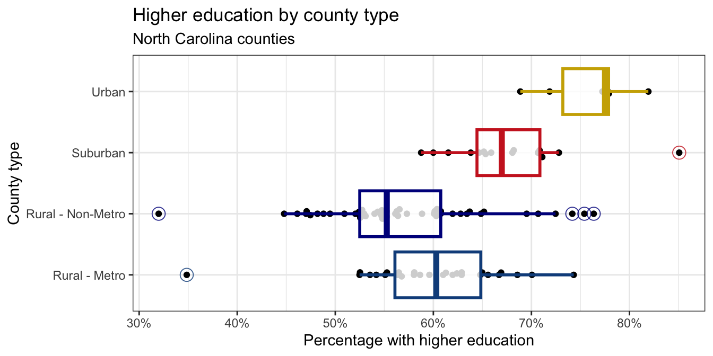

Homework 1
Due: Friday September 11 at 10 AM
On this first homework, you’ll continue to practice data visualization and summarization using the North Carolina counties data from Lab 1. At the end, you’ll dip into the textbook a little bit and think about some conceptual questions. Along the way, we’ll ask you to get a little fancier with the plots, which will require some extra packages:
Exercise 0
Recommend some music for us to listen to while we grade this.
Part 1: Exploring NC Counties
As a reminder, this dataset contains information on North Carolina counties retrieved from the 2020 Census as well as from myFutureNC Dashboard maintained by Carolina Demography at the University of North Carolina at Chapel Hill.
This dataset is stored in the file nc-county.csv, which you can read into R with the following code:
nc_county <- read_csv("data/nc-county.csv")This will read the CSV (comma separated values) file from the data folder and store the dataset as a data frame called nc_county in R.
The variables in the dataset and their descriptions are as follows:
-
county: Name of county; -
land_area_m2: Land area of county in meters-squared, based on the 2020 census; -
land_area_mi2: Land area of county in miles-squared, based on the 2020 census; -
pop_2020: Population of county, based on the 2020 Census; -
pop_dens_2020: Population density calculated as population (pop_2020) divided by land area in miles-squared (people per mile-squared); -
county_type: Peer county type classification based on population characteristics, socioeconomic status, and geographic features used for grouping counties with similar demographic, social, and economic characteristics, allowing them to be compared and benchmarked against one another; -
median_hh_income: Median household income; -
p_foreign_born: Percentage of population that is foreign-born; -
p_child_poverty: Percentage of children living in poverty; -
p_single_parent_hh: Percentage of households with children that are single-parent households; -
p_broadband: Percentage of households with broadband internet access; -
p_home_ownership: Percentage of households that are owner-occupied; -
p_family_sustaining_wage: Percentage of adults that earn a family-sustaining wage – typically a wage that covers essential costs like housing, food, childcare, transportation, and healthcare for a family’s basic needs within a specific geographic area; -
p_edu_lths: Percentage of 25-44-year-olds with less than a high school diploma; -
p_edu_hsged: Percentage of 25-44-year-olds with a high school diploma or equivalent; -
p_edu_scnd: Percentage of 25-44-year-olds with some college or an associate degree; -
p_edu_ndc: Percentage of 25-44-year-olds with non-degree credentials – certifications, licenses, or other credentials that demonstrate specific skills or knowledge but do not confer a formal academic degree; -
p_edu_assoc: Percentage of 25-44-year-olds with an associate degree; -
p_edu_ba: Percentage of 25-44-year-olds with a bachelor’s degree; -
p_edu_mapl: Percentage of 25-44-year-olds with a master’s, professional, or doctoral degree; -
p_edu_hs_grad_rate: High school graduation rate; -
p_edu_chronic_absent_rate: Chronic absenteeism rate.
Exercise 1
Make a bar plot of the number of counties by county_type. What type of county is most common in North Carolina? What type of county is least common?
Exercise 2
Make a boxplot of median household income (median_hh_income) by county_type. In 2-3 sentences, compare the distributions of median household income across the four county types touching on shape, center, spread, and any potential outliers.
Exercise 3
Make a boxplot of the proportion of 25-44-year-olds with a master’s, professional, or doctoral degree (p_edu_mapl) by county_type. How do the median proportions compare across the four county types?
Exercise 4
Recreate the following visualization that compares the distribution of home ownership (p_home_ownership) by county_type. Then, highlight one feature of home ownership that this plot reveals in 1-2 sentences.

x-axis: You can modify the x-axis labels to be percentages in a
scale_x_continuous()layer. The scales package offers a handy function for formatting percentages,label_percent(). You can use this in thelabelsargument ofscale_x_continuous().Color palette: The
scale_color_colorblind()andscale_fill_colorblind()functions from the ggthemes package provide a color palette that is friendly for individuals with color vision deficiencies.Transparancy: You should adjust the transparency of the filled density curves. You don’t have to worry about the exact transparency value, but you should try a few to get close.
Theme: This plot uses a non-default theme. See theme options documentation for options.
Legend: You should move the legend to the top of the plot. You can do this in a
theme()layer. See theme documentation to identify the argument you need to change to move the legend.Aspect ratio: You can adjust the aspect ratio by setting the
fig-aspoption in the code cell. A smaller (closer to 0) value makes the plot shorter and wider, while a larger (closer to 1) value makes the plot square-ish.Width: You can also adjust the width of the plot by setting the
fig-widthoption in the code cell. A larger value makes the plot wider.
Exercise 5
Report the number of rows and columns in
nc_county.-
Create a new variable called
p_edu_he(short for “percentage of population with higher education”) that is the sum of the percentages of- 25-44-year-olds with some college or an associate degree (
p_edu_scnd), - non-degree credentials (
p_edu_ndc), - an associate degree (
p_edu_assoc), - a bachelor’s degree (
p_edu_ba), and - a master’s, professional, or doctoral degree (
p_edu_mapl).
and store this variable in the
nc_countydata frame.Then, report the number of rows and columns in
nc_countyafter adding this variable. - 25-44-year-olds with some college or an associate degree (
-
In a single pipeline, calculate the
- minimum,
- first quartile (25th percentile),
- median (50th percentile),
- mean,
- third quartile (75th percentile), and
- maximum
of
p_edu_he. In a single pipeline, calculate the same statistics as in the previous part, but for each
county_type.
If you don’t create the new variable p_edu_he in part (b), you will not be able to answer the remaining parts of this question or any of the remaining questions on the homework.
Therefore, here is a quick check to make sure you created the variable correctly – after creating the variable, run the following code:
nc_county |>
select(p_edu_he) |>
slice_head(n = 3)You should see the following output:
# A tibble: 3 × 1
p_edu_he
<dbl>
1 0.615
2 0.525
3 0.525If you do not see this output, please revisit part (b) of this question and make sure you created the variable correctly. Ask for help on Ed or in office hours if you need assistance.
Exercise 6
Re-create the following plot that shows the distribution of p_edu_he by county_type.

x-axis: Same hint as before.
Points: The points are drawn with the
geom_beeswarm()function from the ggbeeswarm package.Outliers: The outliers in the box plots are drawn as open circles. You can specify this with the
outlier.shapeargument ingeom_boxplot(). You can also adjust the size of the outliers with theoutlier.sizeargument. The ggplot2 aesthetic specifications documentation has a list of shape names you can use for help.Color palette: The colors for the box plots are manually specified in a
scale_color_manual()layer. You do not need to worry about the exact colors, but you should try to get close, e.g., use blue-ish colors for Rural counties, red-ish for Suburban, and brown-ish for Urban. You can use HEX codes for colors or look up named colors in R in the R colors cheatsheetTransparency: You should adjust the transparency of the box plots. You don’t have to worry about the exact transparency value, but you should try to get close.
Theme: This plot uses a non-default theme. See theme options documentation for options.
Aspect ratio and width: You can adjust the aspect ratio and width of your plot in your rendered document by setting
fig-aspandfig-widthoptions in the code cell.
Exercise 7
Create a scatter plot with percentage of 25-44 year olds with higher education (p_edu_he) on the x-axis and median household income (median_hh_income) on the y-axis. Describe the relationship between these two variables. In your description, make sure to comment on the direction, form, strength, and any unusual observations.
Requirements for the plot:
- The x-axis should be formatted as percentages, e.g., 30%, not 0.3;
- The y-axis should be formatted as dollar amounts, e.g., $40,000, not 4e+04.
Part 2: IMS exercises
These exercises from the textbook do not require code, but you should type your responses into the same Quarto file you’ve been using. Make sure to answer the questions in full sentences.
Exercise 8
IMS Chapter 1 exercises, #4: Cheaters, study components.
Exercise 9
IMS Chapter 1 exercises, #14: UN Votes.
Exercise 10
IMS Chapter 1 exercises, #16: Shows on Netflix.
Submission
- Hit the blue Render button to generate your final PDF;
- Give your work a final look over to double-check a few things:
- that your code is stylish;
- that none of your code or pictures runs off the page. We cannot grade what we cannot read;
- that all of your plots are well-labeled and human-readable. In other words “Flipper length (mm)” instead of
flipper_length_mm; - If your work is lacking on any of these items, fix them and re-render as needed;
- Download the PDF from your container;
- Upload it to Gradescope;
- Don’t forget to mark your pages.